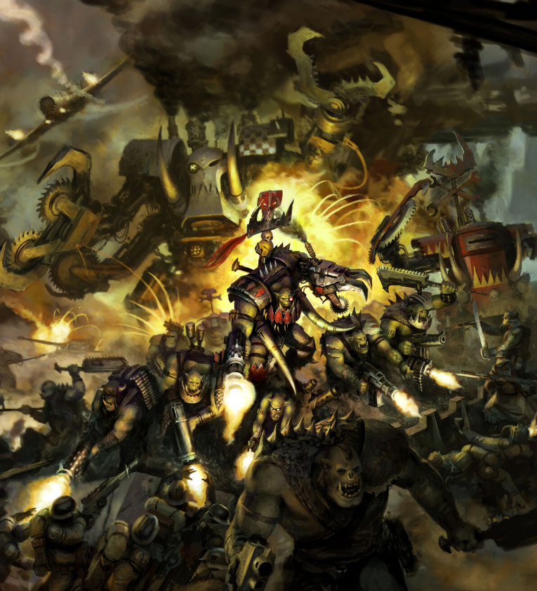

Dossier xenos 702.M41
Une Waaagh n’est pas une guerre. C’est une avalanche vivante. Un point de rupture où la présence ork devient si dense que la violence cesse d’être locale. Elle devient inévitable.
Tout commence par des affrontements mineurs. Des bandes dispersées. Des raids isolés. Rien qui justifie une mobilisation majeure.

ORIGINES ET NATURE
Puis les Orks affluent. Attirés par le bruit, par la bataille, par la simple présence d’autres Orks. Ils ne sont pas convoqués. Ils viennent.
À mesure que leur nombre augmente, un phénomène apparaît. Une énergie collective difficile à quantifier mais impossible à ignorer. Les Orks deviennent plus agressifs. Plus résistants. Plus organisés.
Les machines improvisées fonctionnent. Les armes tirent plus droit qu’elles ne devraient. Les véhicules tiennent malgré des structures absurdes.
Ce n’est pas une coïncidence. C’est une conséquence.
STRUCTURE ET DOCTRINE
Au cœur de la Waaagh se trouve un chef. Un seigneur de guerre suffisamment massif, brutal et dominant pour imposer sa volonté. Ce n’est pas un stratège au sens impérial. Mais il est suivi. Et cela suffit.
Sous son commandement, la horde se transforme. Elle cesse d’être une multitude chaotique. Elle devient une direction.
Les attaques se coordonnent. Les cibles se multiplient. Les défenses cèdent sous la pression constante.
Une Waaagh ne s’arrête pas parce qu’elle a atteint un objectif. Elle continue tant qu’il reste quelque chose à détruire. Tant qu’il reste un ennemi à frapper.
MENACE ACTUELLE
Les mondes touchés ne sont pas seulement envahis. Ils sont saturés. Les continents deviennent des champs de bataille permanents. Les cités sont réduites à des carcasses occupées.
Même une victoire impériale ne garantit pas la fin du phénomène. La destruction du chef peut fragmenter la Waaagh, mais les survivants se dispersent, se reforment, et recommencent ailleurs.
Le véritable danger réside dans l’accumulation. Une Waaagh suffisamment grande peut submerger des systèmes entiers, écraser des flottes, et menacer des secteurs entiers de l’Imperium.
Il faut comprendre ceci. Une Waaagh n’est pas planifiée. Elle est déclenchée. Et une fois lancée, elle ne suit aucune logique autre que celle de la destruction.
Là où elle passe, il ne reste que du bruit, du feu, et des Orks qui rient.
Fin de l’extrait. Toute concentration ork croissante doit être traitée comme début potentiel de Waaagh.